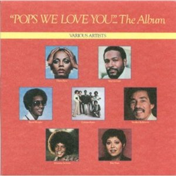

Video
"Pops, We Love You (A Tribute to Father)" es una grabación lanzada como sencillo en el año 1978 en homenaje al padre del fundador de la Motown Berry Gordy, jr. fallecido por cáncer ese mismo año. Berry Gordy, Sr. era conocido como "Pops" y ayudaba a su hijo en la supervisión del sello Motown en la generación de éxitos y guía de numerosos artistas como Marvin Gaye, Diana Ross, Smokey Robinson o Stevie Wonder. Cuando falleció en octubre de 1978, su hijo Berry Gordy, jr mandó a los compositores de la Motown Marilyn McLeod y Pam Sawyer que compusieran una canción en homenaje a su padre y también comenzó a producir un álbum completo con otros artistas. De ahí surgió como tema principal esta canción en la que participaban los artistas anterormante reseñados. Diana Ross, Marvin Gaye y Smokey Robinson grabaron la pista juntos en los estudios de Motown en Los Ángeles, y Stevie Wonder -que se encontraba en pleno proceso de grabación de su "Viaje A Través de la Vida Secreta de las Plantas"- incorporó su voz posteriormente.

Letra
Anyone who's had the pleasure
Of meeting you in this lifetime
Would recognize the strength in you
The sense in you
And the wisdom like sun shining through
Pops, we love you, love you
Yes, we do
Pops, Pops, we love you, love you
Yes, yes, we do
Oh anyone, young and old alike
Would feel free to ask your advice
And you'd know, you`d understand
And you'd give a helping hand
All your life you fought for whats right, whats right
Pops, Pops, we love you, love you
Yes, we do
Pops, we love you, love you
Yes, we do
You always say
First love the Lord
And then it's easy to love thy neighbour
Sing it Smokey
And from what we`ve heard
You`ve always been a man of your word
Pops, we love you, love you
Yes, we do
Like the roots of the strongest tree
You give strength to your friends and family
And anyone who`s had the luck
To meet you
When they're down you can pick them right up
Pops, we love you, love you
Yes, we do
Pops, we love you, love you
Everybody loves ya
Yes, we do
Getting older
And you're still going strong, I know, I know
You know what Pops
When I heard this song
I immediately thought about you
We love you Pops
This song says everything we ever wanted to say to you
And even more
I want you to believe it
I want you to know it
Especially in times when maybe we forgot to show it to you
Pops we love you, we really do
You're so good, you're so kind, you're so real, you're so fine
Pops, we love you, love you
What a wonderful man it is
Yes, we do
Pops, we love you, love you
Yes, we do
All the little children love you
You`ve been wonderful
Pops, we love you
Pops, your name should have been love
Thats what you stand for in our lives